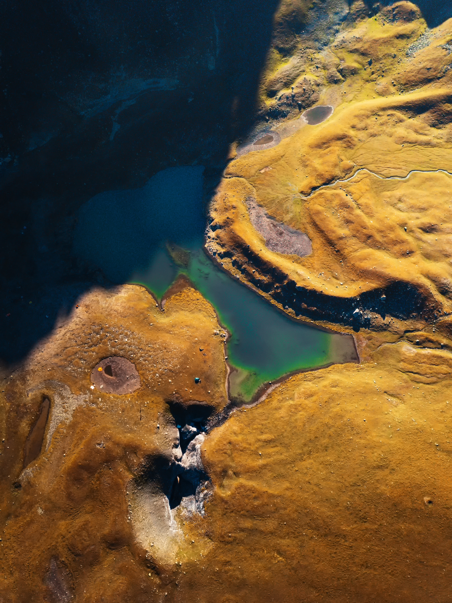
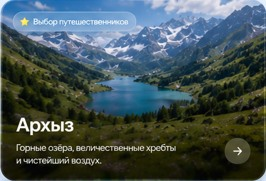

Архыз воспринимается как большая природная сцена: долины, хвойные склоны, ледниковая вода и горы, которые постоянно меняют настроение.

Карачаево-Черкесия
Архыз — горы, озера и чистый воздух Кавказа
Место, где маршрут начинается с тишины и быстро уходит к вершинам
Кратко о городе
Архыз создан для дороги в горы
Здесь легко совместить мягкую прогулку, фотомаршрут и настоящий выезд к сильным природным точкам без ощущения перегруженного курорта.
Достопримечательности
Главные места: Архыз

01
Софийские водопады
Один из самых сильных природных маршрутов Архыза: вода срывается с высоты, а дорога к водопадам проходит через настоящие кавказские пейзажи.

02
Долина Архыза
Широкие виды, мягкие склоны и ощущение пространства. Долина хорошо подходит для первого знакомства с регионом.

03
Горные озера
Озера Архыза дают маршруту чистый цвет и тишину. Это места для спокойной остановки, фотографий и ощущения высоты.
04
Нижне-Архызское городище
Исторический слой Архыза: древние храмы, следы старых дорог и ощущение Кавказа как перекрестка культур.

05
Горные склоны
Зимой и летом склоны остаются главным визуальным акцентом Архыза: спорт, воздух и панорамы работают вместе.
Атмосфера города
Архыз между водой, лесом и вершинами
Горное утро
Утро здесь начинается с холодного воздуха и ясных линий гор. Лучшее время для первых фотографий и коротких маршрутов.
Вода и камень
Водопады добавляют маршруту энергию: шум воды, влажный воздух и ощущение живой силы гор.
Тишина озер
Озера меняют темп поездки: после дороги хочется просто остановиться и смотреть, как вода отражает небо.
Вечер в горах
К вечеру Архыз становится глубже по цвету, а горы кажутся ближе. Это время для спокойных панорам.
Город в деталях
Что полезно знать перед поездкой
Горный, с прохладными вечерами даже летом.
Поселок расположен примерно на 1450 метрах.
Долины, хвойные леса, водопады, озера и снежные вершины.
Древнее городище и храмы напоминают о старых маршрутах Кавказа.
Прогулки, фотомаршруты, горные дороги и зимние склоны.
Лето и ранняя осень для природы, зима для снежного отдыха.
Архыз не шумит. Он просто открывает горы ближе, чем ждешь.